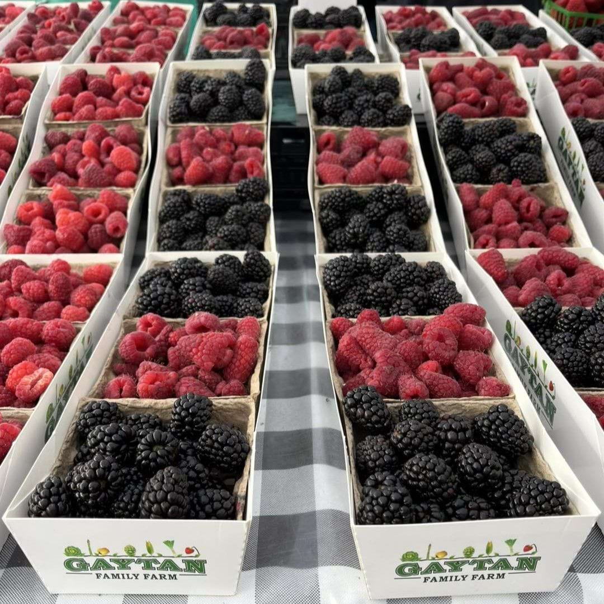

Market Details
- Day & Time: Sunday, 9:00 AM – 2:00 PM
- Location: 40820 Winchester Rd, Temecula, CA 92591
- Season: Year-round
- Market Manager: Sarah Walker
- Contact: (951) 555-1234
- Certified by: Riverside County Agricultural Commissioner
About This Market
Located at the Promenade Mall in Temecula, this market provides fresh produce, local goods, and handcrafted items from local vendors every Sunday.
What You'll Find
Seasonal Produce
Fresh, seasonal fruits and vegetables.
Artisan Foods
Handmade cheeses, breads, and snacks.
Visitor Tips
Best Time to Visit
Arrive early for the best selection of products.
Parking
Free parking is available at the Promenade Mall.